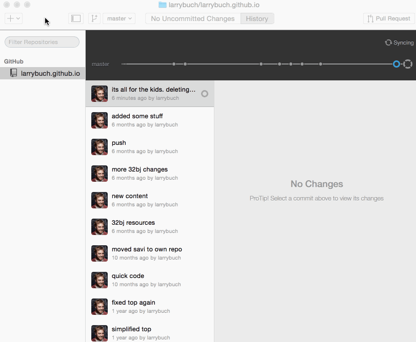
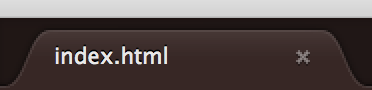
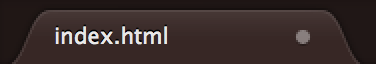
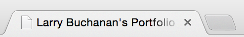
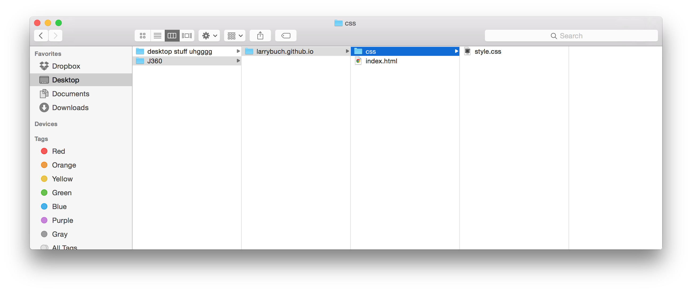
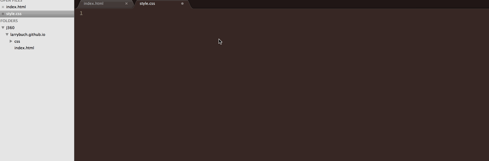

Introduction
August 24.Thanks for enrolling in this course. The Internet is a fun place, so this should be fun.
Goal By the end of this lesson, you’ll have a website live on the internet. No training wheels.
due This is due Friday before midnight, but I wouldn’t wait until then. Get in touch early if you’re lost.
Lost? Drop any and all questions in Slack. I'll have office hours this week in the Google Hangout (just jump in, I'll be in there) from 7 to 8 p.m. on Wednesday and Thursday.

You should have signed up already for a Github username, downloaded the Github Desktop app, and installed Sublime Text.
This tutorial from the Knight Lab at Northwestern might also be helpful if you get stuck.
Github is kind of like Facebook for programmers. People and organizations have profiles where they host their code. The code is public so other people can collaborate on, fix, share, improve and use code. You may have heard of things like Bootstrap, jQuery, and Backbone (if not, it’s ok). These are all bundles of code hosted on github for people to use and collaborate on for free. On the internet, unlike, say, parts of academia, copying is encouraged, as long as, like academia, you cite your sources and give credit where credit is due. Programmers are generally lazy, so instead of writing something from scratch, they’ll use frameworks and code bundles that other people have already written.
You may have also heard of things like domain names and hosting packages. You may already have already purchased a domain name and a hosting package to host your own website.
Github gives hosting away to each use for free, so you can host your site right on Github’s servers.
Your site will live at the address http://your-github-username.github.io. So my portfolio site is hosted on Github is larrybuch.github.io.
As I eluded to in the intro of this course, some people think a program is going to come along that will eliminate the need to write code. We’re going to assume that’s to going to happen.
The guts of the internet are, generally, HTML, CSS, and JavaScript (JS). My friend Adrian likes to use the analogy of the body when describing what each different part does.
HTML is the bones, the structure of the site.
CSS is the skin, the hair, the eyes, the exterior.
JS is the muscle.
Sites are just a collection of those three types of files, which we type (code) in a text editor (like Sublime).
Instead of exactly describing what each one does, I find it’s easiest to jump right into the code and break some stuff.
Repositorys are bundles of code. In our case, bundles of HTML, CSS and JS. I’d make a folder wherever you keep your valuables (I suffer from the bad habit of saving to the desktop), call it ‘j360’ and this is where all of your stuff for the whole semester will live.
Now, fire up the Github app.
In the top left corner, click the plus. Name your repo your-github-username.github.io. No spaces, no caps. It must be exact. Save it in your ‘j360’ folder. Then open the folder in your finder and you’ll notice a folder with the same name has been created it. That’s where we’ll work.
We won’t come back to the app until we’re ready to push our changes live.
OK, we’ve created a repo. Now we need to fill it up with code. Our first site is going to be pretty basic to start. The first file of every website is the index file.
Drag your j360 folder to the Sublime icon in your dock, or open Sublime and go to file > open and choose the j360 folder. You’ll see the file structure reflected in the sidebar.
Then go to file > new file to create a new file. Save it immediately. Go to file > save as and save the file inside the your-github-username.github.io folder as index.html.
Then, select all of this code below and paste it in your index.html file. WHOA CODE. Don’t freak out. We’ll go through it line by line.
<!doctype html>
<html lang="en">
<head>
<meta charset="utf-8">
<title>The HTML5 Herald</title>
<meta name="description" content="The HTML5 Herald">
<meta name="author" content="SitePoint">
<link rel="stylesheet" href="css/style.css">
</head>
<body>
<!-- The goods go here. -->
</body>
</html>
HTML is made up of tags. Tags open and tags close. You open a tag like this <tag>. Inside the tag you put your content, then you close it with a forward slash to let the computer know you’re done, like this </tag>.
<tag>This will be seen by humans.</tag> or <h1>This is super important.</h1> or <p>This is a paragraph.</p>.
There are tons of tags. For paragraphs we use <p> tags, to make something bold we use the <strong> tag. If you’ve ever edited html in a blog, you may have used the <a> tag to add a link. We can drop in images with the <img> tag. You don’t have to memorize these; they’re always just a Google away, but you’ll become more familiar with them with time.
Ok, here’s a breakdown of what that above stuff means.
<!doctype html>This is just telling the browser that we’re writing html.
<html lang="en">This is opening the <html> tag and saying use English as our language. If you look down at the bottom, you’ll notice the closing </html> tag. Everything is wrapped in that.
<head>This is the opening head tag. A site has two main parts. The head and the body. Anything in the <head> portion, the computer cares about (with a few exceptions). Anything in the <body> portion, will actually show up on the site.
<meta charset="utf-8">This is setting the character set for the computer to use. If you’re coding with standard english characters, you won’t need to mess with this.
<title>Your Portfolio Site</title>
<meta name="description" content="Add your description here.">
<meta name="author" content="Larry Buchanan">These three lines are mostly for search engines. The title tag sets the title of your site. You’ll want to change this to something like Your Portfolio site or something like that. This is what will show up as the title of your site in the top of the browser and in Google search results. You should also modify the description and the author.
<link rel="stylesheet" href="css/style.css">This is where we’ll link up our css document to add fonts, colors, sizes, spacing, etc. The css refers to the folder its in, and the style.css is the filename. We’ll create that file in a second. And that closes out the <head> section.
<body>The goods go inside of the body tag. Most of the code we write will go here.
<!-- The goods go here. -->This is a comment; it won’t show up on the page (but people can still see it if they inspect the code, so be careful).
</body>
</html>And then we close our body tag. And close our html tag.
Inside of your body tag, delete the comment and add this line.
<h1> Hello, world. </h1>Save your file (get used to using the shortcut ⌘ + s on a mac, ctl + s on a pc).
Then, right click in Sublime window and choose Open in browser. Your default browser (which I would make Chrome) should open with your website.
Congrats! You’re a programmer!

Jump back to Sublime (I’d get used to using the alt + tab shortcut to switch windows. We’ll be doing this literally thousands of times.)
Below the <h1> line add this line <p> Totally slaying this code right now. Can’t believe how easy this is.</p>
Save (⌘ + s), jump to Chrome (alt + tab), and refresh your browser (⌘ + r). Boom.
I know it’s not much to look at, but you just did a lot. Get used to this motion of saving, changing windows and refreshing. This is how it all works. You know your document is saved if there’s a little x  up on the tab in Sublime. If that’s a circle,  it’s not saved and your changes won’t show up, and you’ll be confused as to why, and you’ll try everything, and you’ll get frustrated, but really your document just isn’t saved. I’ve done this 17,000,000 times.
OK, what really happened is that you wrote some html and opened it in your browser, which you browser can read, interpret and display. Did you notice the title of your page also changed?
Change the content of the h1 to be Your Name’s Portfolio. And change the description to be a little bit about you.
Save. Switch to Chrome. Refresh.
Lookin’ good.
One more thing. Inside your description, let’s add a link. In my case I’m going to make The New York Times link to the NYT homepage. Links are a bit tricky, but I have faith in you. My code would look like this.
<p>Larry Buchanan is a graphics editor at <a href="http://nytimes.com/">The New York Times</a>. Before that he worked as a freelancer for The New Yorker, The Onion, ESPN and others. Before that, he went to Indiana University, adopted a dog, and lived in a log cabin. </p>So you wrap the <a> tag around the thing you want to to be a link, then you change the href (which stands for hypertext reference) to the url you want it to link to.
Want that link to open in a new page? Pretty easy … but I’ll let you figure that out on your own. In your code, make sure the link opens up in a new page. Try googling “open link in own page html” and see what you get.
I have to do things all day everyday that I either don’t know how to do, or forget how to do. Google is your friend. If you can’t figure it out, you’re not Googling hard enough. Stack overflow is a great resource for questions like this.
Hang with me, we’re almost done.
Remember like an hour ago, I said we’d need to create a css file? Let’s do that now. Inside your your-username-here.github.io folder create a folder called css. And in Sublime create a file called style.css and save it inside your css folder.
Your file structure should look like this.
Inside your style.css file lets add a few lines to see what happens.
body {
background-color: red;
}You can probably figure out what’s going to happen. Save. Switch to Chrome. Refresh.
Starting to see how this all fits together? Let’s change the size of our name and add some space below it. It’s in an h1 tag. I’m also going to change the background color to a more appealing cyan.
h1 {
font-size: 73px;
margin-bottom: 30px;
}Look at that. Let’s change the font of our paragraph from serif (fonts with little feet, think Times New Roman, Georgia) to sans-serf (fonts without feet, think Arial, Helvetica).
p {
font-family: sans-serif;
}Nice. Now I’ve given you enough ammo to be dangerous. Play around with this a little bit more. See what you come up with. Use Google. And then put it on the Internet.
Feeling good? The whole time, Github has been watching your changes. If you go back to the Github app, notice your index.html file and your style.css file are listed with the changes you made.
We need to push all of this up to Github, and because we named our repository with your-username.github.io, it will publish our files to that url.
In the summary box, type a little message about what you did. This is called a commit message. This isn’t too crucial now, but becomes more important as your projects grow, you try new things, and you collaborate with other people. For now, type something like first commit. Then hit commit and sync master.
Now, in your browser, head to your-username.github.io. This might take a few minutes (up to 15), but it should be live on the internet.
If you want to make changes, no problem. Make them locally (that means on your computer), test them out, and then go back to Github, add a commit message, and commit and sync those changes. They’ll update instantly online.
Have a website live on the internet by Friday at midnight at your-username.github.io. If you've made it this far, you're probably done.
There’s no need to turn anything in. Github records every time you push something and it’s all public. When I go to grade these, I’m just going to go to your-github-username.github.io. If I see something, I’ll grade it. If not, you’re out of luck. Reach out to me before this happens if you’re having trouble.
Thanks for enrolling in this course. The Internet is a fun place, so this should be fun.